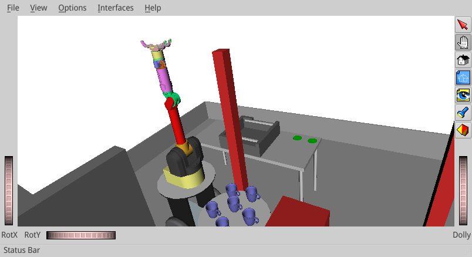

The best solution to install OpenRAVE today is to build from source, which fortunately is not so difficult. The instructions in this post are for Ubuntu 16.04. You can also see this post for Ubuntu 14.04.
Dependencies¶
First, make sure the following programs are installed on your system:
sudo apt-get install cmake g++ git ipython minizip python-dev python-h5py python-numpy python-scipy python-sympy qt4-dev-tools
Next, you will need to install the following libraries from the official Ubuntu repository:
sudo apt-get install libassimp-dev libavcodec-dev libavformat-dev libavformat-dev libboost-all-dev libboost-date-time-dev libbullet-dev libfaac-dev libglew-dev libgsm1-dev liblapack-dev liblog4cxx-dev libmpfr-dev libode-dev libogg-dev libpcrecpp0v5 libpcre3-dev libqhull-dev libqt4-dev libsoqt-dev-common libsoqt4-dev libswscale-dev libswscale-dev libvorbis-dev libx264-dev libxml2-dev libxvidcore-dev
The next dependency is collada-dom, which you can clone from Github and
build from source as well:
git clone https://github.com/rdiankov/collada-dom.git cd collada-dom && mkdir build && cd build cmake .. make -j4 sudo make install
OpenSceneGraph¶
The following dependency is OpenSceneGraph. The version provided on the Ubuntu repository is 3.2, but OpenRAVE requires 3.4, so we are going to build it from source:
sudo apt-get install libcairo2-dev libjasper-dev libpoppler-glib-dev libsdl2-dev libtiff5-dev libxrandr-dev git clone --branch OpenSceneGraph-3.4 https://github.com/openscenegraph/OpenSceneGraph.git cd OpenSceneGraph && mkdir build && cd build cmake .. -DDESIRED_QT_VERSION=4 make -j4 sudo make install
In case you have both Qt4 and Qt5 installed on your system, the
DESIRED_QT_VERSION flag tells the compiler to use Qt4, which is the one
expected by OpenRAVE (thanks to Fred Sukkar for pointing this out).
Alternatively, if you don't need the OSG viewer, you can disable this
dependency: run ccmake . from your OpenRAVE build directory (to install
this tool: sudo apt-get install cmake-curses-gui), scroll to
OPENRAVE_PLUGIN_QTOSGRAVE and switch it to OFF.
Flexible Collision Library¶
In new versions OpenRAVE defaults also require you to install the Flexible Collision Library:
sudo apt-get install libccd-dev git clone https://github.com/flexible-collision-library/fcl.git cd fcl git checkout 0.5.0 # use FCL 0.5.0 mkdir build && cd build cmake .. make -j4 sudo make install
Due to this bug, I also needed to add the following symlink to get FCL to compile:
sudo ln -sf /usr/include/eigen3/Eigen /usr/include/Eigen
Alternatively, you can disable the FCL plugin by running ccmake . from
your OpenRAVE build directory. Scroll down to OPENRAVE_PLUGIN_FCLRAVE
and switch it to OFF.
Building OpenRAVE¶
Once all this software is installed, clone the latest_stable branch of
OpenRAVE from GitHub:
git clone --branch latest_stable https://github.com/rdiankov/openrave.git
At the time of writing these instructions (August 2016), the latest commit on
this branch is 9c79ea26.... If it is fine with you to run an old
version of the software, you can check it out to raise your chances of a
successful install:
# only run this if you don't need the latest version of OpenRAVE: git checkout 9c79ea260e1c009b0a6f7c03ec34f59629ccbe2c
What follows is the default procedure to build projects with CMake. By default,
OpenSceneGraph installs its libraries in the non-standard
/usr/local/lib64, so we add a flag so that CMake finds it:
cd openrave && mkdir build && cd build cmake .. -DOSG_DIR=/usr/local/lib64/ make -j4 sudo make install
This can raise a number of errors depending on your system. See the troubleshooting OpenRAVE installation page for a small list of known problems and fixes.
Adding OpenRAVE to your path¶
Finally, you will need to add OpenRAVE to your Python path:
export LD_LIBRARY_PATH=$LD_LIBRARY_PATH:$(openrave-config --python-dir)/openravepy/_openravepy_ export PYTHONPATH=$PYTHONPATH:$(openrave-config --python-dir)
Write these two lines in your .bashrc or .zshrc to save this
configuration between sessions.
Running a first example¶
You can check that your installation works by running one of the default examples:
openrave.py --example graspplanning
This command should fire up the graspplanning example:

Now that your software is up and running, you can check out how to set up your first environment.
Issue #435¶
If your robots have crazy model geometries in the viewer, you may be running into bug #435 which seems related to Ubuntu 16.04. You can post the details of your configuration on the issue tracker to help address it.
Discussion ¶
You can subscribe to this Discussion's atom feed to stay tuned.
-
Saber-Riadh
Posted on
I'm encountering some issues installing it on Ubuntu 20.04 if you can send me a tutorial on how to do it.
-

Stéphane
Posted on
I can't tell you how to install OpenRAVE on Ubuntu 20.04 as I have long switched to Pinocchio, which is straightforward to install via
condaorpip. The best place to ask about the issue you encounter is the official OpenRAVE issue tracker.
-
Feel free to post a comment by e-mail using the form below. Your e-mail address will not be disclosed.